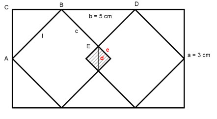

Flächenberechnungen Aufgabe 75 Wie groß ist die Fläche des eingeschlossenen Quadrates und die Länge seiner Diagonale?  Satz von Pythagoras im Dreieck ABC: Das Dreieck ist gleichschenklig, rechtwinklig mit 45° Winkeln bei A und B. a a l² = (---)² + (---)² 2 2 l² = 1,5² + 1,5² l² = 2,25 + 2,25 l² = 4,5 |√ l = 2,1 cm Satz von Pythagoras im Dreieck BED: Das Dreieck ist gleichschenklig, rechtwinklig mit 45° Winkeln bei B und D. BD = 5 cm - 2 * 1,5 cm = 2 cm BE = ED = c BD² = c² + c² 2² = 2 * c² |:2 c² = 2 |√ c = 1,4 cm e = l - c = 2,1 cm - 1,4 cm = 0,7 cm A = e² A = 0,7 cm * 0,7 cm = 0,49 cm² Satz von Pythagoras im kleinen Quadrat: d² = c² + c² d² = 2 * 0,7² d² = 0,98 |√ d = 1 cm